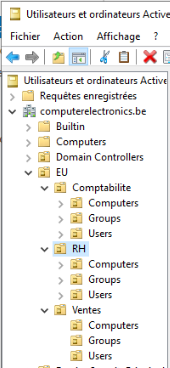

Chapitre 7: Les Stratégies de Groupe (GPO)
🧭 Navigation du Cours
⏮️ Chapitre Précédent: Gestion des Utilisateurs | 🏠 Retour au Syllabus | ⏭️ Chapitre Suivant: PowerShell AD
📊 Votre Progrès
- [✅] Chapitre 1: Introduction et installation
- [✅] Chapitre 2: Installation VirtualBox
- [✅] Chapitre 3: DNS
- [✅] Chapitre 4: Active Directory Domain Services
- [✅] Chapitre 5: Unités d'Organisation
- [✅] Chapitre 6: Gestion des Utilisateurs
- [🔄] Chapitre 7: Group Policy Objects (En cours)
📚 Dans ce chapitre: 1. 🌐 Introduction aux GPO - Concepts de base - Types de stratégies 2. 🔰 Hiérarchie et Application - Niveaux d'application - Ordre de traitement 3. 💻 Configuration des GPO - Outils de gestion - Exemples pratiques
1. Introduction aux GPO
🌐 1.1. Qu'est-ce qu'une Stratégie de Groupe ?
Une GPO est aussi un objet qu'on peut créer dans la base de données de AD-DS et qui a les capacités suivantes:
| 🛠️ Capacités | Description |
|---|---|
| 💻 Configuration | Gérer de manière centralisée les configurations |
| 🔒 Sécurité | Appliquer des paramètres de sécurité |
| 💾 Déploiement | Déployer des logiciels |
| 🖥️ Scripts | Configurer des scripts de démarrage/arrêt |
💡 Principe clé: Modifier un seul GPO pour configurer plusieurs machines ou utilisateurs!
💡 Pour débutants: Une GPO = un ensemble de règles que vous appliquez à vos utilisateurs ou ordinateurs. Au lieu de configurer chaque PC un par un, vous créez une règle une fois et elle s'applique partout!
1.2. Exemples d'application
| Catégorie | Description Détaillée | Exemples |
|---|---|---|
| Sécurité | Implémente les politiques de sécurité de l'entreprise : complexité des mots de passe, restrictions d'accès, paramètres de pare-feu, etc. | Obligation de mots de passe complexes (12 caractères min.), configuration du pare-feu d'entreprise |
| Configuration Utilisateur | Configure l'environnement de travail des utilisateurs : fond d'écran, paramètres Office, mappages de lecteurs réseau. | Application du fond d'écran d'entreprise, mappage automatique des lecteurs réseau par département |
| Configuration Système | Gère les paramètres système : services Windows, paramètres réseau, configuration des mises à jour. | Activation/désactivation des services d'impression |
| Déploiement | Automatise l'installation et la mise à jour des applications, pilotes et correctifs sur les postes clients. | Installation automatique de la suite Office 365, mise à jour automatique des logiciels Adobe |
| Restrictions | Contrôle l'accès aux fonctionnalités système et applications selon les besoins métier et la sécurité. | Désactivation des ports USB pour le service RH, restriction de l'accès à PowerShell |
| Automatisation | Automatise les tâches via des scripts exécutés à des moments spécifiques (connexion, démarrage, etc.). | Exécution de scripts de connexion pour mapper les lecteurs, sauvegarde automatique des fichiers utilisateurs |
1.3. Qui est affecté par les GPOs ? Définition d’un site AD
Les stratégies de groupe peuvent être appliquées à différents niveaux de la hiérarchie AD : un ordinateur, un site, un domaine AD, une OU...

Rappel:
- Site AD vs Sous-zone DNS :
-
Site AD :
- Représente une localisation physique
- Défini par des sous-réseaux IP (ex: 192.168.10.0/24)
- But : Optimisation du trafic et de la réplication
-
Zone DNS :
- Section d'un espace de noms DNS (ex: maxtec.be)
- But : Organisation hiérarchique des noms
Dans notre infrastructure :
- Domaine AD et Zone DNS principale : maxtec.be
- Sites AD : site EU (192.168.10.0/24) et site US (192.168.20.0/24)
- Zones DNS : Zone EU (eu.maxtec.be), Zone US (us.maxtec.be)
Ces concepts sont distincts mais complémentaires dans une infrastructure d'entreprise.
Dans notre laboratoire de pratique, le domaine AD correspond au site EU, et nous avons un seul site (nous avons utilisé les ips 192.168.0.x au lieu de 192.168.10.x), mais peu importe.
Nous avions convenu que les deux sites/zones seraient gérés par un seul contrôleur de domaine (dns1, le DC du labo) et, en théorie, un second en réplication (dns2).
Ces serveurs doivent gérer les deux sites et sont physiquement chez nous.
Dans un environnement réel, nous aurions au moins deux autres DCs : dns3 et dns4, qui seraient situés physiquement aux États-Unis.
Les quatre DCs peuvent gérer les deux sites et partager la même base de données AD. Deux sont situés en Europe et les deux autres aux États-Unis.
Et alors on doit re-créer la BD d'active Directory partout??
NON!
La séparation en sites n'a pas d'impact sur la BD.
Pourquoi? Car les objets AD (comme les OU) sont stockés dans la base de données du DC, qui est la même (copie) dans tous les DCs de la même forêt, ce qui implique que la configuration des OUs est la même dans tous les DCs, peu importe le site..
En gros: On peut créer toute la structure (EU et USA) des OUs dans le seul DC de notre labo. Si on rajoutait un autre DC (dns3) pour le site USA il aurait la même configuration AD que le DC du site EU (on ne devrait pas la ré-creer sur le nouveau DC).
Notre site porte le nom Default First Site Name (Barre de tache->Server Manager->Sites->Sites et services->Sites) , nom donnée par AD-DS lors la création du domaine.
Ce sera notre site pour l'Europe, alors renommez-le à Site-EU (click droit sur le site->Rename).
On pourrait créer un autre site si on avait un autre adaptateur réseau, chacun associé a un sous-réseau, mais ce n'est pas le but de notre labo.
Connaissant la notion de site, continuons maintenant avec la classification des GPOs.
🎯 Checkpoint: Concepts GPO et Sites
Avant de créer vos premières GPOs: - [ ] Je sais qu'une GPO est un ensemble de règles pour configurer plusieurs machines - [ ] Je comprends que les GPOs s'appliquent à différents niveaux (site, domaine, UO) - [ ] Je sais que notre labo a un seul site (Site-EU) - [ ] Je comprends que les sites sont distincts des zones DNS
💡 Pour débutants: Ne vous inquiétez pas si les concepts de sites semblent complexes. L'important est de comprendre que les GPOs sont des règles que vous appliquez à vos utilisateurs et ordinateurs!
2. Création des GPOs
Nous allons étudier les caractéristiques des GPOs en détail plus tard, mais commençons par créer une GPO d'exemple.
Avant de commencer, assurez-vous d'avoir installé le laboratoire en suivant les instructions du document d'installation Labo_structure.md
Exemple pratique: restreindre le panneau de configuration aux membres de Ventes
Créons une GPO pour cacher certains éléments du panneau de configuration aux Users de Ventes. La suite d'opérations sera la suivante:
- **Créer** une GPO nomméeGPO-Restrictions-VentesPCet liée à l'OUVentes. Dans ce cas, elle affectera aux utilisateurs de Ventes, peu importe sur quel ordinateur ils se connectent.
- **Modifier** la GPO (vide au départ): elle doit empêcher l'accès des utilisateurs de Ventes aux éléments suivants du panneau de configuration:
- Programmes et fonctionnalités
- Système
- **Appliquer** la GPU (dans ce cas à l'OUVentes)
- **Se connecter** au serveur avec un user deVenteset vérifier que le panneau de configuration est restreint (on voit que les optionsProgrammes et fonctionnalitésetSystème` sont cachées)
Pour faire tout ça, voici les étapes:
Dans le serveur:
- Ouvrir le
Gestionnire de Serveur>Outils>Gestion de stratégies de groupe - Cliquer sur la
Forèt>Domaines>maxtec.be - Deployer l'UO
EU(Europe) - Clique droit sur l'OU
UserdansVentes>Créer un objet GPO dans ce domaine et le lier ici - Nommez la GPO
GPO-Panneau-Restreint(par exemple) - Deployer la OU
UsersdansVentes, observez qu'il y a un élément qui porte le nomGPO-Panneau-Restreint. Cet élément est un lien vers la GPO qui se trouve à cet endroit pour indiquer que la GPO s'applique à cett unité d'organisation.
Note: Le vrai objet GPO se trouve dans l'arbre, dans le folder Objets de Strategie de groupe. Ceci permet de lier/délier cette GPO à une ou plusieurs OUs (ex: si on veut limiter le panneau de configuration aux Users de Ventes et RH mais pas à ceux de Comptabilité). On fera ça plus tard.
- Clique droit sur la GPO
GPO-Panneau-Restreintet sélectionnezModifier - Cliquez sur
Configuration de l'utilisateur>Stratégies>Modeles d'administration>Panneau de configuration>Masquer les éléments ... - Cliquez sur
Activer, puis surAfficher - Rajoutez
SystèmeetProgrammes et fonctionnalitésà la liste (tapez-les à la main) - Clique sur
Ok>Appliquer
Dans le client:
La GPO est prête: pour la tester, on va se connecter avec un client du département Ventes sur la MV Windows (ex: victor)
- Connectez-vous avec un user de
Ventes(victor) - Ouvrez une console et lancez
gpupdate /forcepour recevoir les GPOs du serveur - Lancez aussi
gpresult /rpour voir les politiques appliquées à l'utilisateur Si vous voulez plus de détail, lancezgpresult /vSi vous voulez un rapport dans un fichier, lancezgpresult /h resultat.html - Note importante : Pour certaines GPOs, particulièrement celles qui affectent des paramètres système, un redémarrage complet du poste client peut être nécessaire pour que les changements prennent effet.
- Faites logout et connectez-vous à nouveau (même user)
- Ouvrez le panneau de configuration et cliquez sur
SystèmeouProgrammes et fonctionnalités. Ils devraient être vides.
Connectez-vous maintenant avec un user de Comptabilité (ex: christophe). Le panier de configuration ne devrait pas être restreint.
On peut voir les politiques appliquées sur un utilisateur avec la commande gpresult /r (console ordinateur client)
On peut forcer l'application des politiques depuis le serveur: faites click droit sur l'OU liée à la GPO et sélectionnez Mettre à jour les stratégies de groupe).
Ceci lance la commande à distance sur les ordinateurs contenus dans l'OU: le serveur se connecte aux session locales des ordinateurs. Si l'OU contient seulement des Utilisateurs elle n'aura aucun effet.
ATTENTION: Deux points vitaux
-
Une GPO affecte les ordinateurs et les utilisateurs liés à l'OU sur laquelle la GPO est liée et à ses sous-OUs. Si l'OU contient uniquement de groupes elle ne sera pas appliquée aux utilisateurs de ces groupes.
-
Si une GPO contient uniquement des paramètres Utilisateur et elle est liée à une OU contenant seulement des ordinateurs, la GPO n'aura aucun effet.
Être sur que les GPOs soient appliquées
L'application des stratégies de groupe dépend de l'état du poste de travail et de la session utilisateur. Voici les points clés à comprendre :
| Situation | Stratégie ordinateur | Stratégie utilisateur | Commentaire |
|---|---|---|---|
| Poste allumé, personne connectée | ✅ Oui | ❌ Non | Les stratégies ordinateur continuent de se rafraîchir même sans utilisateur |
| Poste allumé, utilisateur connecté | ✅ Oui | ✅ Oui | Toutes les stratégies sont actives pendant une session |
| Poste éteint | ❌ Non | ❌ Non | Aucune stratégie ne peut s'appliquer sur un poste éteint |
| Utilisateur connecté via RDP ou console | ✅ Oui | ✅ Oui | Le mode de connexion n'affecte pas l'application des stratégies |
Notes importantes sur le rafraîchissement :
- Les stratégies ordinateur :
* S'appliquent au démarrage initial (il faut re-démarrer si on les change!!)
* Se rafraîchissent automatiquement toutes les 90-120 minutes
* Peuvent être forcées avec gpupdate /force /target:computer (dans certains cas on a besoin de redémarrer le poste)
- Les stratégies utilisateur :
* S'appliquent à chaque connexion utilisateur
* Se rafraîchissent toutes les 90-120 minutes
* Peuvent être forcées avec gpupdate /force /target:user
gpupdate /force lancera le tout.
Les stratégies ordinateur sont visibles uniquement si on ouvre un console en tant qu'administrateur et on lance:
gpresult /r /scope:computer
Activer/desactiver une GPO
Pour activer/desactiver une GPO, il faut cliquer sur l'OU liée à la GPO et sélectionner/désélectionner Lien active. La politique sera uniquement appliquée si le lien est actif.
L'option Appliquer force l'application de la GPO et saute même la hiérarchie des OUs (on coche Appliquer uniquement pour des politiques de sécurité critiques ou des cas similaires).
3. Classifications des GPO
Pour pouvoir gérer proprement les GPOs on doit comprendre comment elles sont appliquées.
Ordre d'application LSDO
Les paramètres de stratégie de groupe (GPO) sont appliqués dans l'ordre suivant, du plus général au plus spécifique :
- Local (le plus général, n'est pas une vraie GPO)
- Configuration Windows stockée localement (pas dans AD)
- Existe avant de joindre le domaine
- Ce n'est pas une GPO d'Active Directory
-
Exemples : Pare-feu Windows par défaut, options d'alimentation
-
Site
- GPOs liées aux sites AD (zones physiques du réseau)
- S'applique à tous les objets d'un site
-
Exemples : Configuration proxy (Site-EU), permissions d'accès aux imprimantes (Site-US)
-
Domaine
- GPOs globales pour tout le domaine AD
- S'applique à tous les objets (utilisateurs, ordinateurs, groupes)
- Exemples : Politique de mot de passe, installation antivirus
-
Rappel : un domaine peut contenir plusieurs sites (Site-EU, Site-US)
-
OU (le plus spécifique)
- GPOs pour des départements ou groupes spécifiques
- Exemples : Logiciels comptables (OU Comptabilité), accès dossiers (OU RH)
- Une OU peut contenir des objets de plusieurs sites
- Note : Dans notre cas, les OUs racines (EU, USA) sont liées à leurs sites respectifs (Site-EU, Site-US)
Note: Chaque GPO contient deux sections distinctes : - Configuration ordinateur (Computer Configuration) - Configuration utilisateur (User Configuration)
Point clé: Les politiques peuvent être écrasées par les niveaux suivants, toujours en appliquant la plus restrictive. Exemples : - Une configuration locale permissive peut être restreinte par une GPO de domaine - Une politique de mot de passe du domaine (8 caractères) peut être renforcée dans une OU (12 caractères)
4. 📌 Clarification des stratégies GPO dans Active Directory
Les deux grandes catégories de stratégies GPO sont:
1️⃣ Configuration ordinateur
- S'applique aux machines, indépendamment de l’utilisateur qui se connecte.
- Exemples : paramétrage des services Windows, pare-feu, gestion des mises à jour.
2️⃣ Configuration utilisateur
- S'applique aux utilisateurs lorsqu'ils se connectent à une machine, indépendamment de l'ordinateur.
- Exemples : restriction d'accès à certains programmes, redirection de dossiers.
💡 Un même GPO peut contenir des paramètres dans les deux catégories, mais ils ne s'appliquent qu’aux objets auxquels ils sont liés (ordinateurs ou utilisateurs).
Les sous-menus de chaque catégorie
Chaque catégorie (ordinateur et utilisateur) contient les mêmes sous-sections principales :
Stratégies (Policies)
- Contient des paramètres fortement gérés par l’administrateur.
- Stockés dans la base de registre sous
Policies. - Priorité élevée : Windows réapplique la règle même si l’utilisateur tente de la modifier.
- Exemples : paramétrage des services Windows, pare-feu, gestion des mises à jour.
Préférences (Preferences)
- Contient des paramètres modifiables par l'utilisateur (pas comme les stratégies).
- Écrit dans la base de registre hors "Policies", donc modifiable après application.
- Exemples : configuration des imprimantes, mappage de lecteurs réseau.
🔧 Modèles d'administration (Administrative Templates)
- Ensemble de définitions de paramètres GPO au format ADMX/ADML
- Peuvent être appliqués soit comme stratégies (forcés), soit comme préférences (modifiables)
- L'administrateur choisit le mode d'application lors de la configuration
- Permettent une gestion centralisée sans modification directe du registre Windows
Voyons en détail chaque type.
4.1. Stratégies
📌 Configuration Ordinateur > Stratégies
✔ Paramètres Logiciel
- Déploiement de logiciels (installation, mise à jour, désinstallation)
✔ Paramètres Windows
- Scripts (au démarrage et à l'arrêt)
- Paramètres de sécurité (ex. stratégie de mot de passe, pare-feu Windows)
- Configuration du pare-feu
✔ Modèles d’administration (Administrative Templates)
- Configuration des services système
- Restriction sur l’installation des pilotes
- Paramètres de Windows Update
Exemples :
- Désactiver l'installation automatique des imprimantes réseau : Configuration ordinateur > Strategies > Modèles d’administration > Menu Démarrer et Barre des tâches > Ne pas conserver d'historique des documents récemment ouverts.
- Forcer une mise à jour Windows automatique : Configuration ordinateur > Strategies > Modèles d’administration > Composants Windows > Windows Update > Configurer les mises à jour automatiques.
Vous devez d'abord desactiver le pare-feu dans les ordinateurs client!
📌 Configuration Utilisateur > Stratégies
✔ Paramètres Logiciel
- Déploiement de logiciels (installation, mise à jour, désinstallation)
✔ Paramètres Windows
- Scripts (à l'ouverture et à la fermeture de session)
- Redirection de dossiers
- Paramètres de sécurité (ex. interdire l'accès au panneau de configuration)
✔ Modèles d’administration (Administrative Templates)
- Restriction d'accès à certaines applications
- Paramètres d’interface (ex. masquer les paramètres système)
- Gestion des extensions de navigateur
Exemples :
- Désactiver la modification du fond d’écran : Configuration utilisateur > Modèles d'administration > Panneau de configuration > Personnalisation > Empêcher de modifier l'arrière-plan.
- Restreindre l’accès au gestionnaire de tâches : Configuration utilisateur > Modèles d’administration > Système > Options Ctrl+Alt+Suppr > Supprimer le Gestionnaire des tâches.
🛑 Piège courant : le filtrage GPO par cible
⚠️ Une erreur fréquente est d’appliquer une GPO contenant des paramètres "Configuration utilisateur" sur une Unité Organisationnelle (OU) contenant uniquement des ordinateurs, ou vice versa.
💡 Solution : utiliser "Boucle de rappel utilisateur" (Loopback Processing)
👉 Cela permet de forcer l'application des paramètres utilisateur sur un ordinateur, même si la GPO est liée à une OU contenant des ordinateurs.
4.2. Préférences (Preferences)
- Contient des paramètres modifiables par l'utilisateur
- Écrit dans la base de registre hors "Policies", donc modifiable après application
- Exemples : configuration des imprimantes, mappage de lecteurs réseau
Exemple pratique :
Configuration utilisateur > Préférences > Paramètres Windows > Lecteurs réseau
Action: Créer
Emplacement: \\srv-files\commun
Lettre: Z:
L'utilisateur peut modifier la lettre du lecteur si nécessaire.
Résumé final en une image mentale
🔹 Configuration ordinateur = Gère le PC et ses paramètres système.
🔹 Configuration utilisateur = Gère l'expérience de l’utilisateur.
🔹 Stratégies (Policies) = Restrictions strictes, contrôlées par l’admin.
🔹 Préférences (Preferences) = Configurations plus souples, modifiables par l'utilisateur.
🔹 Boucle de rappel utilisateur = Force l'application des paramètres utilisateur sur un ordinateur, même si la GPO est liée à une OU contenant des ordinateurs.
5 🎯 Ciblage vs Liaison des GPO
Une distinction importante existe entre le ciblage (targeting en anglais) et la liaison des GPO :
| Étape | Rôle | Effet |
|---|---|---|
| Lien GPO → OU | Détermine où la GPO est évaluée | Sans lien, la GPO ne s'applique pas du tout |
| Ciblage au niveau de l'élément | Détermine si l'action spécifique dans la GPO s'applique | Si la condition échoue, l'action est ignorée, mais pas la GPO entière |
| Filtrage de sécurité (ACL) | Détermine qui peut appliquer la GPO | Si l'utilisateur n'a pas de droits, la GPO est ignorée |
💡 Note importante : Le ciblage existe à la fois dans les Stratégies (Policies) et les Préférences (Preferences), mais avec des différences : - Dans les Stratégies : Ciblage principalement via les filtres de sécurité et les filtres WMI - Dans les Préférences : Ciblage plus flexible avec des options supplémentaires (filtrage par IP, par groupe, par variable d'environnement...)
6. Utilisation de la délégation pour créer des exceptions
On peut utiliser la délégation pour empecher une GPO de s'appliquer sur un utlisateur ou sur un groupe.
- Faites double click sur la GPO et allez dans l'onglet
Delegation> Avancé - Rajoutez le groupe sur lequel la GPO ne doit pas s'appliquer
- Dans la section des droits, selectionnez
RefuserdansAppliquer la stratégie de groupe.
La GPO s'appliquera normalement, sauf pour le groupe dont l'application de la GPO est refusée.
7. Filtrage des GPOs
Une fois qu'une GPO est liée à un niveau (Site, Domaine ou OU), on peut affiner son application avec deux méthodes de filtrage.
- Filtrage de Sécurité
- Permet de cibler des groupes de sécurité spécifiques
-
Exemple : Appliquer une GPO uniquement aux membres du groupe "Vendeurs Senior"
-
Filtrage WMI (Windows Management Instrumentation)
- Permet de filtrer selon des critères techniques
- Exemples :
- Appliquer une GPO uniquement aux ordinateurs Windows 11
- Appliquer des paramètres d'économie d'énergie uniquement aux ordinateurs portables
Note importante : En cas de conflit entre GPO, la règle est simple : la dernière GPO appliquée (la plus spécifique) l'emporte sur les précédentes.
🎯 Checkpoint Final - Maîtrise des GPOs
Avant de terminer ce chapitre, assurez-vous de bien comprendre :
✅ Ce qu'est une GPO : Un ensemble de règles qui s'applique automatiquement ✅ L'ordre d'application : Site → Domaine → OU ✅ Le filtrage : Comment cibler des groupes ou types d'ordinateurs spécifiques ✅ L'héritage : Comment les règles se propagent dans la hiérarchie
💡 Pour débutants : Si vous pouvez expliquer les GPOs avec l'analogie des règles d'une école (règles générales + règles spécifiques par classe), vous avez compris l'essentiel !
🎉 Félicitations ! Chapitre 7 Terminé
Vous maîtrisez maintenant un des outils les plus puissants d'Active Directory ! Les Group Policy Objects vous permettront d'automatiser et de standardiser la configuration de tous vos ordinateurs et utilisateurs.
🚀 Prochaine Étape
Dans le prochain chapitre, nous explorerons des concepts avancés qui vous permettront de gérer des environnements encore plus complexes.
Progression du cours : 7/X chapitres complétés 🎯